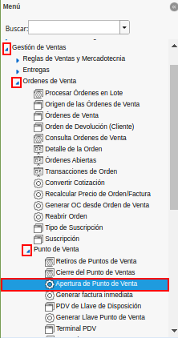
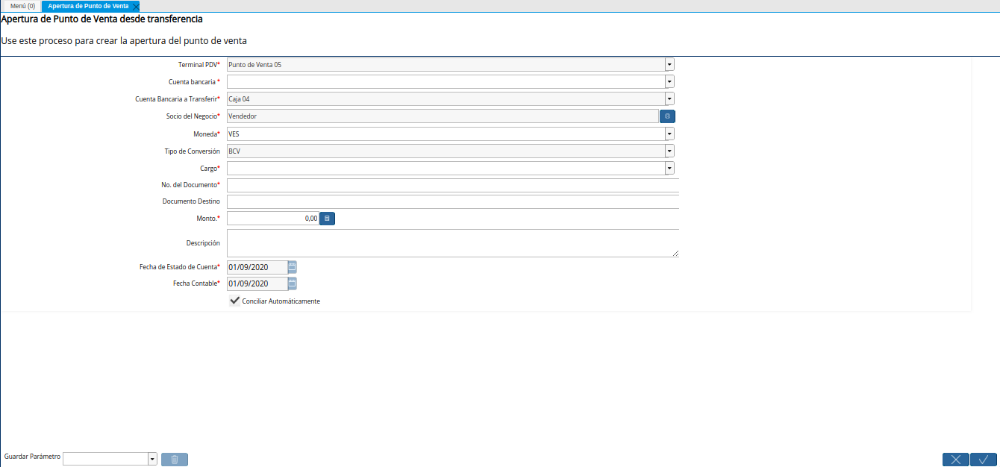
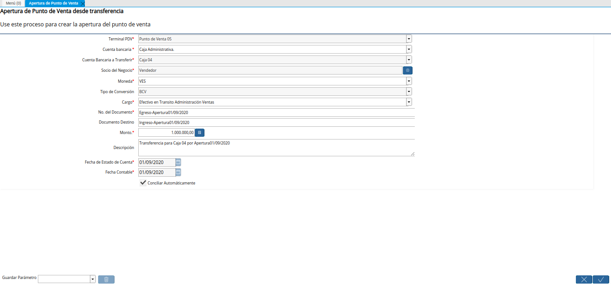
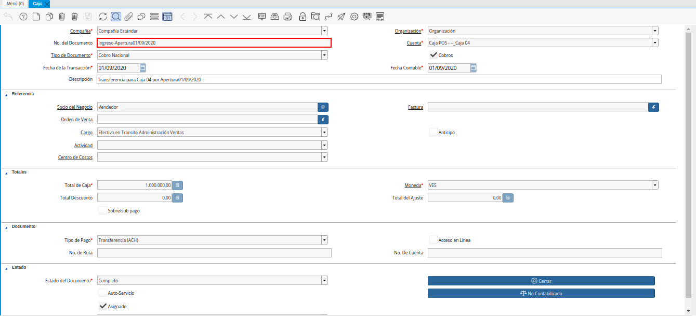
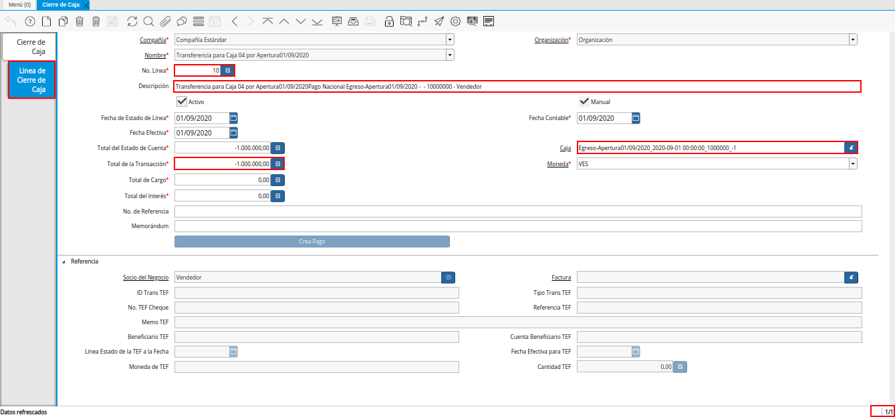
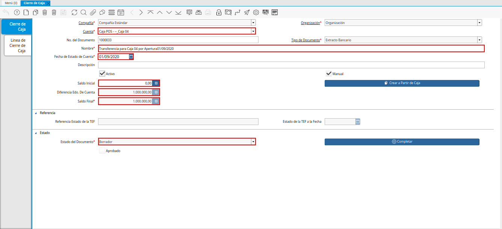
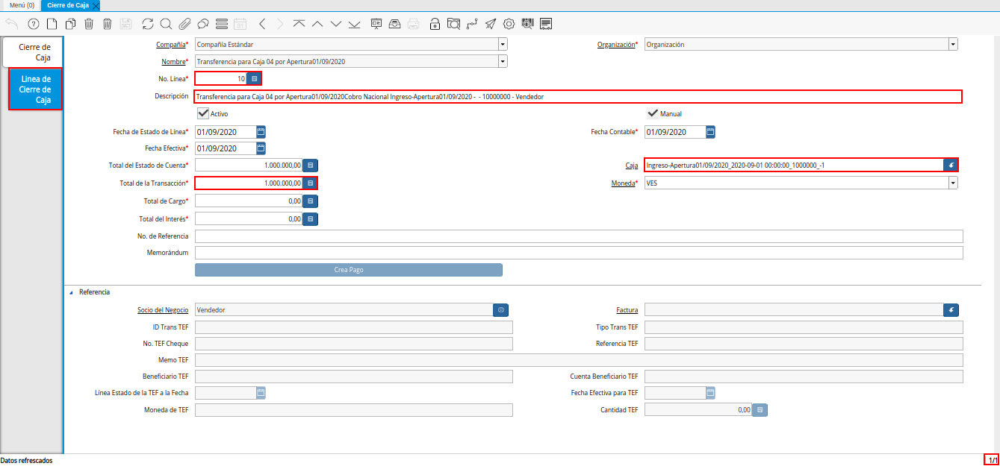

8.2. Apertura de Caja¶
Ubique y seleccione en el menú de ADempiere, la carpeta “Gestión de Ventas”, luego seleccione la carpeta “Órdenes de Venta”, por último seleccione la carpeta “Punto de Venta”. Para finalizar, seleccione el proceso “Apertura de Punto de Venta”.

Imagen 1. Menú de ADempiere
Podrá visualizar la ventana “Apertura de Punto de Venta”, con diferentes campos que permiten simular las transferencias monetarias entre las cuentas bancarias y cajas registradas en ADempiere.

Imagen 2. Ventana Apertura de Punto de Venta
Realice en la ventana “Apertura de Punto de Venta”, el proceso regular para generar una transferencia bancaria, dicho procedimiento se encuentra explicado en el documento Registro de Transferencia Bancaria, elaborado por ERPyA.
Para la apertura de una caja, es necesario que sean cumplidas las siguientes restricciones en la ventana “Apertura de Punto de Venta”.
En el campo Terminal PDV, se encuentra el terminal configurado para el socio del negocio empleado.
En el campo Cuenta Bancaria”, se debe seleccionar la cuenta caja origen desde la cual se realizará la transferencia. En este caso, se debe seleccionar la cuenta “Caja Administrativa”.
En el campo “Cuenta Bancaria a Transferir”, se encuentra la cuenta caja destino seleccionada en el terminal PDV como cuenta bancaria a la cual se realizará la transferencia. En este caso, un ejemplo sería: “Caja 04”.
Note
Recuerde que la cuenta a seleccionar debe ser la cuenta correspondiente a la caja donde realizará las operaciones de ventas el socio del negocio empleado.
En el campo “Socio del Negocio”, se debe seleccionar el socio del negocio empleado que realizará las operaciones en la caja seleccionada en el campo “Cuenta Bancaria a Transferir”. En este caso, un ejemplo sería: “Vendedor”.
En el campo “Moneda”, se debe seleccionar la moneda utilizada en la transferencia del dinero.
En el campo “Cargo”, se debe seleccionar el cargo “Efectivo en Tránsito Administración Ventas”.
En el campo “No. del Documento”, se debe ingresar el nombre seguido de la fecha del proceso que esta registrando. En este caso, un ejemplo sería: “Egreso-Apertura01/09/2020”.
En el campo “Documento Destino”, se debe ingresar el nombre seguido de la fecha del proceso que esta registrando. En este caso, un ejemplo sería: “Ingreso-Apertura01/09/2020”.
En el campo “Monto”, se debe ingresar el monto total de la transferencia en la moneda seleccionada. En este caso, un ejemplo sería: “1.000.000,00.
En el campo “Descripción”, se debe ingresar una descripción breve que explique de forma puntual la transferencia. En este caso, un ejemplo sería: “Transferencia para Caja 04 por Apertura01/09/2020”.
En el campo “Fecha de Estado de Cuenta”, la fecha en la que se esta realizando la transacción.
En el campo “Fecha Contable”, la fecha en la que se esta realizando la transacción.

Imagen 3. Transferencia Bancaria de Apertura de Caja
Note
Recuerde seleccionar la opción “OK”, ubicada en la parte inferior de la ventana “Transferencia Bancaria”, para completar el proceso y simular en ADempiere el movimiento monetario realizado.
8.2.1. Consultar Egreso e Ingreso Generado de la Apertura de Punto de Venta¶
Al buscar entre los registros de la ventana “Caja”, los valores ingresados en los campos “No. del Documento” y “Documento Destino”, de la ventana “Apertura de Punto de Venta”, se pueden visualizar dos (2) registros resultantes de la transferencia bancaria, entre ellos se encuentran.
El egreso generado en la cuenta “Caja Administrativa” como pago nacional, con toda la información suministrada en el proceso ejecutado en la ventana “Apertura de Punto de Venta”.
Imagen 4. Egreso Generado de la Transferencia Bancaria de Apertura de Caja
El ingreso generado en la cuenta “Caja 04” como cobro nacional, con toda la información suministrada en el proceso ejecutado en la ventana “Apertura de Punto de Venta”.

Imagen 5. Ingreso Generado de la Transferencia Bancaria de Apertura de Caja
8.2.2. Consultar Registros Creados en la Ventana Cierre de Caja¶
Al realizar una apertura de caja se crean dos registros en estado “Borrador”, en la ventana “Cierre de Caja”, uno para cada caja involucrada en el proceso ejecutado en la ventana “Apertura de Punto de Venta”.
8.2.2.1. Caja Administrativa¶
El registro con la cuenta “Caja Administrativa”, se crea automáticamente con las siguientes restricciones:
Cuenta: La cuenta “Caja Administrativa”, previamente seleccionada en el campo “Cuenta Bancaria” de la ventana “Apertura de Punto de Venta”.
Nombre: La descripción “Transferencia para Caja 04 por Apertura01/09/2020”, previamente ingresada en el campo “Descripción” de la ventana “Apertura de Punto de Venta”.
Fecha del Registro: La fecha “01/09/2020”, en la cual fue ejecutado el proceso de apertura desde la ventana “Apertura de Punto de Venta”.
Saldo Inicial: El saldo “0,00”, con el que inicia la caja.
Diferencia Edo. De Cuenta: El monto de “-1.000.000,00”, de diferencia entre el saldo final del estado de cuentas y el saldo final actual.
Saldo Final: El monto de “-1.000.000,00”, correspondiente al saldo final o al cierre. El saldo final es el resultado de ajustar el saldo inicial por cualquier pago o desembolso.
Imagen 6. Registro del Cierre de Caja Administrativa
El mismo contiene en la pestaña “Línea de Cierre de Caja”, el registro del egreso por la apertura de caja realizada y contiene asociado el documento de egreso generado en la ventana “Caja”.

Imagen 7. Pestaña Línea de Cierre de Caja Administrativa
8.2.2.2. Caja 04¶
El registro con la cuenta “Caja 04”, se crea automáticamente con las siguientes restricciones:
Cuenta: La cuenta “Caja 04”, previamente seleccionada en el campo “Cuenta Bancaria a Transferir” de la ventana “Apertura de Punto de Venta”.
Nombre: La descripción “Transferencia para Caja 04 por Apertura01/09/2020”, previamente ingresada en el campo “Descripción” de la ventana “Apertura de Punto de Venta”.
Fecha del Registro: La fecha “01/09/2020”, en la cual fue ejecutado el proceso de apertura desde la ventana “Apertura de Punto de Venta”.
Saldo Inicial: El saldo “0,00”, con el que inicia la caja.
Diferencia Edo. De Cuenta: El monto de “1.000.000,00”, de diferencia entre el saldo final del estado de cuentas y el saldo final actual.
Saldo Final: El monto de “1.000.000,00”, correspondiente al saldo final o al cierre. El saldo final es el resultado de ajustar el saldo inicial por cualquier pago o desembolso.

Imagen 8. Registro del Cierre de Caja 04
El mismo contiene en la pestaña “Línea de Cierre de Caja”, el registro del ingreso por la apertura de caja realizada y contiene asociado el documento de ingreso generado en la ventana “Caja”.

Imagen 9. Pestaña Línea de Cierre de Caja 04